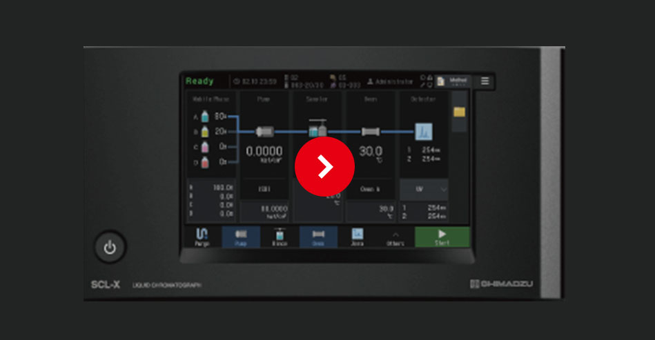
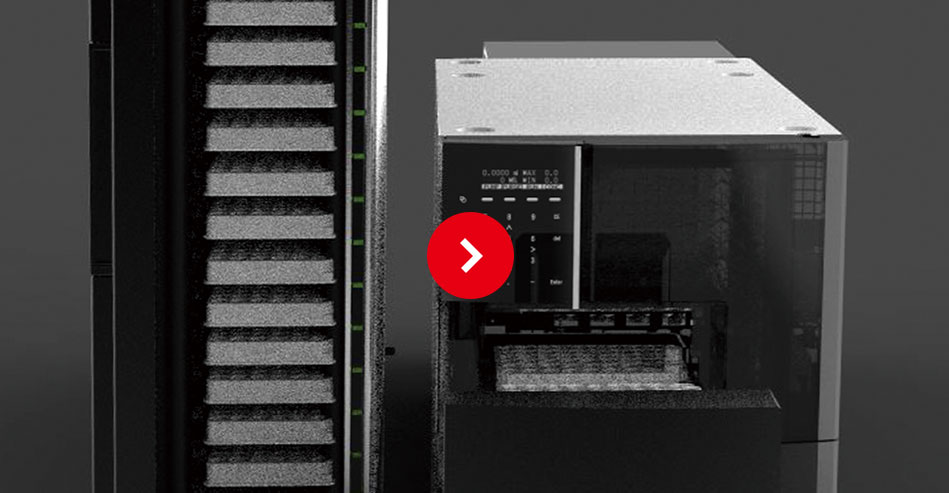
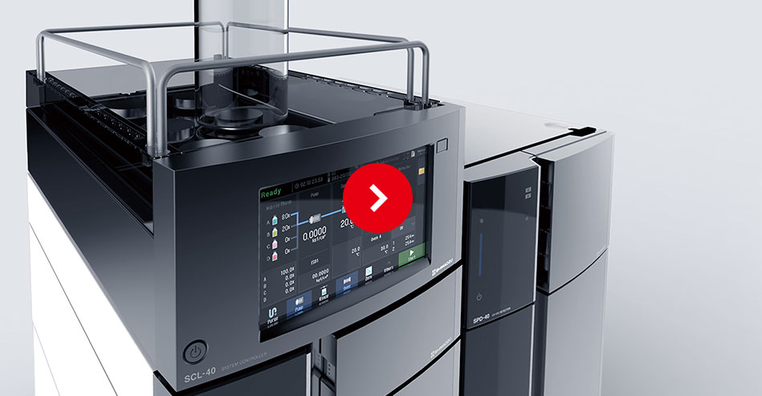

移動相残量モニター
事前に分析本数を予測する
移動相残量モニター
移動相の枯渇を防ぐために、予め現在の残量から分析可能な本数を予測して 分析開始前にユーザーに知らせます。複数分析時もそれぞれの分析に必要な 移動相を、分析に必要な量だけ、人に寄らず正確に自動調製できます。
デュアルインジェクション、マルチプレックス
省スペースと
多角的解析の両立
オートサンプラにセットしたサンプルを効率的に分析。1つのサンプルを複数の 流路で同時分析した結果を使った多角的解析や、多数の試料を複数の流路に 注入し分ける多検体処理が可能になります。
部品交換予測、予防的メンテナンス
使用状況に合わせた
ラボの分析機器管理
装置の稼働時間や部品の交換履歴をIoTを用いて自動収集し、最適な交換の タイミングを事前にお知らせしトラブルを未然に防ぎます。装置の稼働率を高い 状態で維持でき、ラボの運用コスト、スペースの最適化を図れます。
